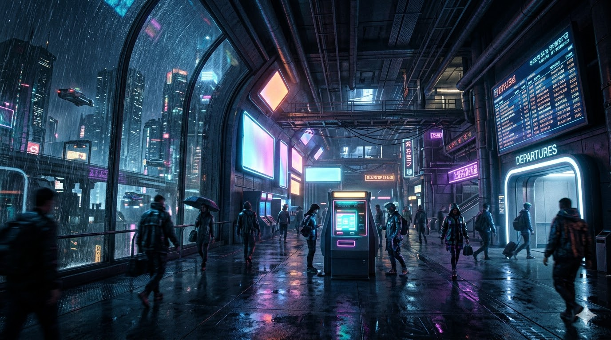

Right now from this station you can only depart to the year 2000 — to http://city.cyberpunk.ru, which was the inspiration for this city.
If you’re building a similar city-site yourself, drop a line to eugene.triphonov@gmail.com — we might add it to the list of destinations.